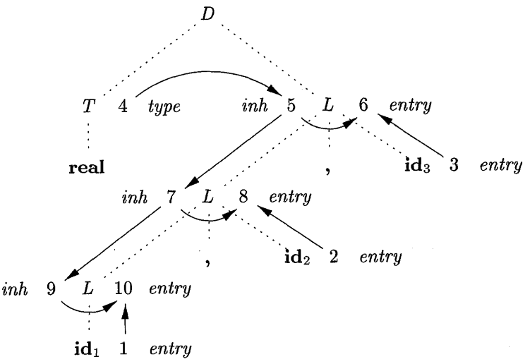

Semantic Analyzer
Ahmad Yoosofan
Compiler course
University of Kashan
- E → E + a
- E → a
` ` | a | + | $ | E |
|---|---|---|---|---|
0 | s2 | 1 | ||
1 | s3 | acc | ||
2 | r2 | r2 | ||
3 | s4 | |||
4 | r1 | r1 |
Stack | Input | Action |
|---|---|---|
\(I_0\) | a[8]+a[9]$ | |
\(I_0\) a[8] \(I_2\) | +a[9]$ | r2(E → a) |
\(I_0\) E[8] \(I_1\) | +a[9]$ | |
\(I_0\) E[8] \(I_1\) + \(I_3\) | a[9]$ | |
\(I_0\) E[8] \(I_1\) + \(I_3\) a[9] \(I_4\) | $ | r1(E→E+a) |
\(I_0\) E[17] \(I_1\) | $ | |
acc |

` ` | Production | Semantic |
|---|---|---|
1 | E → a | E.val = lexValue(a) |
2 | E → E + a | E.val = \(E_1\).val + lexValue(a) |
` ` | a | + | $ | E |
|---|---|---|---|---|
0 | s2 | 1 | ||
1 | s3 | acc | ||
2 | r2 | r2 | ||
3 | s4 | |||
4 | r1 | r1 |
n | Stack | Input | Action |
|---|---|---|---|
0 | \(I_0\) | a[8]+a[9]+a[2]$ | |
1 | \(I_0\) a[8] \(I_2\) | +a[9]+a[2]$ | r2(E → a) |
2 | \(I_0\) E[8] \(I_1\) | +a[9]+a[2]$ | |
3 | \(I_0\) E[8] \(I_1\) + \(I_3\) | a[9]+a[2]$ | |
4 | \(I_0\) E[8] \(I_1\) + \(I_3\) a[9] \(I_4\) | +a[2]$ | r1(E→E+a) |
5 | \(I_0\) E[17] \(I_1\) | +a[2]$ | |
6 | \(I_0\) E[17] \(I_1\) + \(I_3\) | a[2]$ | |
7 | \(I_0\) E[17] \(I_1\) + \(I_3\) a[2] \(I_4\) | $ | r1(E→E+a) |
8 | \(I_0\) E[19] \(I_1\) | $ | |
9 | acc |

Anotated parse tree
a[8]+a[9]+a[2]

Dependency Graph
- E → T + E
- E → T
- T → F * T
- T → F
- F → ( E )
- F → a
Syntax-Directed Definition
Production | Semantic Rules |
|---|---|
S → E n | print(E.v) |
E → \(E_1+T\) | \(E.v=E_1.v + T.v\) |
E → T | \(E.v=T.v\) |
T → \(T_1*F.v\) | \(T.v=T_1.v * F.v\) |
T → F | \(T.v=F.v\) |
F → ( E ) | \(F.v=E.v\) |
F → a | \(F.v=a.lexval\) |

1 tokens = ('NUMBER','PLUS', 'MINUS', 2 'MUL', 'DIV', 'LPAR', 'RPAR') 3 t_PLUS = r'\+' 4 t_MINUS = r'\-' 5 t_MUL = r'\*' 6 t_DIV = r'/' 7 t_LPAR = r'\(' 8 t_RPAR = r'\)' 9 def t_NUMBER(t): 10 r'[0-9]+' 11 t.value = int(t.value) 12 return t 13 t_ignore = " \t" 14 def t_error(t): 15 print("Illegal character '%s'" % 16 t.value[0]) 17 t.lexer.skip(1) 18 import ply.lex as lex;lex.lex()
1 import ply.yacc as yacc; yacc.yacc() 2 while True: 3 try: 4 s = input('calc > ') 5 if s.strip()=='':break 6 yacc.parse(s) 7 except: 8 print('unexpected error')
1 def p_S(p): 2 'S : E' # S → E 3 print('S → E ', p[1]) 4 5 def p_E_plus_T(p): 6 'E : E PLUS T' # E → E + T 7 p[0] = p[1] + p[3] 8 9 def p_E_MINUS_T(p): 10 'E : E MINUS T' # E → E - T 11 p[0] = p[1] - p[3] 12 13 def p_E_T(p): 14 'E : T' # E → T 15 p[0]=p[1] 16 17 def p_T_MUL_F(p): 18 'T : T MUL F' # T → T * F 19 p[0] = p[1] * p[3]
1 def p_T_DIV_F(p): 2 'T : T DIV F' # T → T / F 3 if p[3] != 0: 4 p[0] = p[1] / p[3] 5 else: 6 print('Error: Divide by zero '); 7 p[0]=p[1] 8 9 def p_T_F(p): 10 'T : F' # T → F 11 p[0]=p[1] 12 13 def p_F_a(p): 14 'F : NUMBER' # F → a 15 p[0]=p[1] 16 17 def p_F_lpar_E_rpar(p): 18 'F : LPAR E RPAR' # F → ( E ) 19 p[0]=p[2]
Inherited Attribute
Production | Semantic Rules |
|---|---|
D → T L | L.in = T.type |
T → int | T.type = integer |
T → real | T.type = real |
L → L1, id | L1.in = L.in, addtype(id.entry,L.in) |
L → id | addtype(id.entry,L.in) |
- int i
- int a,b,c
- real x,y
- D → T {L.in = T.type} L
- T → int {T.type = integer}
- T → real {T.type = real}
- L → {L1.in = L.in} L1, id {addtype(id.entry,L.in)}
- L → id {addtype(id.entry,L.in)}
real a, b, c
1 def E(lex1): 2 t = lex1.getToken() 3 if t.type == 'a': 4 print('a B\t a: ', t.value, end=',') 5 print('\tB: ', lex1.s[lex1.end:]) 6 return B(lex1) 7 print('Synatx Error: number expected') 8 print('Reminder: ',lex1.s[lex1.begin:]) 9 return False 10 11 def B(lex1): 12 t = lex1.getToken() 13 if t.type == '+': 14 print('+E,\tE:', lex1.s[lex1.end:] ) 15 return E(lex1) 16 elif t.type == 'EOF': return True 17 print('Error a a:', s[0]) 18 return False 19 20 def run(s): 21 lex1 = lexical_number_plus.lexical(s); 22 print(E(lex1))
1 def E(lex1): 2 t = lex1.getToken() 3 if t.type == 'a': 4 print('a B\t a: ', t.value, end=',') 5 print('\tB: ', lex1.s[lex1.end:]) 6 return B(lex1) 7 print('Synatx Error: number expected') 8 print('Reminder: ',lex1.s[lex1.begin:]) 9 return False 10 11 def B(lex1): 12 t = lex1.getToken() 13 if t.type == '+': 14 print('+E,\tE:', lex1.s[lex1.end:] ) 15 return E(lex1) 16 elif t.type == 'EOF': return True 17 print('Error a a:', s[0]) 18 return False 19 20 def run(s): 21 lex1 = lexical_number_plus.lexical(s); 22 print(E(lex1))
1 """ → , λ 2 S → T L ; # L.t = T.t 3 T → INT # T.t = INT 4 T → DOUBLE # T.t = DOUBLE 5 L → a M # type(a, L.t); M.t = L.t 6 M → λ # 7 M → , L # L.t = M.t 8 """ 9 tokens = ('ID','DOUBLE', 'INT', 10 'COMMA', 'SEMI' ) 11 t_DOUBLE = r'\.double' 12 t_INT = r'\.int' 13 t_ID = r'[a-zA-Z_][a-zA-Z_0-9]*' 14 t_COMMA = r'\,' 15 t_SEMI = r'\;' 16 17 t_ignore = " \t" 18 19 def t_error(t): 20 print("Illegal character '%s'" % 21 t.value[0]) 22 t.lexer.skip(1) 23 24 import ply.lex as lex;lex.lex()
24 import ply.lex as lex;lex.lex() 25 start = 'S' 26 ds1 = [] 27 def p_S(p): 28 'S : T L SEMI' # S → E 29 print(p[1]) 30 print(ds1) 31 def p_Ttype(p): 32 """T : INT 33 | DOUBLE""" 34 p[0] = p[1] 35 def p_id_m(p): 36 'L : ID M' 37 ds1.append(p[1]) 38 def p_m_empty(p): 39 'M : ' 40 pass 41 def p_MLFcomma(p): 42 'M : COMMA L' 43 pass 44 def p_error(p): 45 print("Syntax error at '%s'" % p) 46 import ply.yacc as yacc; yacc.yacc() 47 s = '.int a,b,c;' 48 yacc.parse(s)
1 tokens = ('ID','DOUBLE', 'INT', 2 'COMMA', 'SEMI' ) 3 t_DOUBLE = r'\.double' 4 t_INT = r'\.int' 5 t_ID = r'[a-zA-Z_][a-zA-Z_0-9]*' 6 t_COMMA = r'\,' 7 t_SEMI = r'\;' 8 t_ignore = " \t" 9 def t_error(t): 10 print("Illegal character '%s'" % 11 t.value[0]) 12 t.lexer.skip(1) 13 import ply.lex as lex;lex.lex() 14 start = 'S' 15 ds1 = [] 16 def p_S(p): 17 'S : T L SEMI' # S → E 18 print(p[1]) 19 print(ds1) 20 def p_Ttype(p): 21 """T : INT 22 | DOUBLE""" 23 p[0] = p[1] 24 def p_id_m(p):
24 def p_id_m(p): 25 'L : ID M' 26 ds1.append(p[1]) 27 def p_m_empty(p): 28 'M : ' 29 pass 30 def p_MLFcomma(p): 31 'M : COMMA L' 32 pass 33 def p_error(p): 34 print("Syntax error at '%s'" % p) 35 import ply.yacc as yacc; yacc.yacc() 36 while True: 37 try: # .double x,y; 38 s = input('.int a,b,c; > ') 39 if s.strip()=='':break 40 yacc.parse(s) 41 except: 42 print('unexpected error') 43 finally: 44 ds1 = []
1 keywords = ('double', 'int', ) 2 tokens = keywords + ('ID', 'COMMA', 'SEMI' ) 3 t_COMMA = r'\,' 4 t_SEMI = r'\;' 5 t_ignore = " \t" 6 def t_ID(t): 7 r'[a-zA-Z_][a-zA-Z_0-9]*' 8 if t.value in keywords: 9 t.type = t.value 10 return t 11 def t_error(t): 12 print("Illegal character '%s'" % 13 t.value[0]) 14 t.lexer.skip(1) 15 import ply.lex as lex;lex.lex() 16 start = 'S' 17 ds1 = [] 18 def p_S(p): 19 'S : T L SEMI' # S → E 20 print(p[1]) 21 print(ds1) 22 def p_Ttype(p): 23 """T : int 24 | double"""
24 | double""" 25 p[0] = p[1] 26 def p_id_m(p): 27 'L : ID M' 28 ds1.append(p[1]) 29 def p_m_empty(p): 30 'M : ' 31 pass 32 def p_MLFcomma(p): 33 'M : COMMA L' 34 pass 35 def p_error(p): 36 print("Syntax error at '%s'" % p) 37 import ply.yacc as yacc; yacc.yacc() 38 while True: 39 try: # .double x,y; 40 s = input('int a,b,c; > ') 41 if s.strip()=='':break 42 yacc.parse(s) 43 ds1=[] 44 except: 45 print('unexpected error')
1 keywords = ('double', 'int', ) 2 tokens = keywords + ('ID', ) 3 literals = [',', ';'] 4 t_ignore = " \t" 5 def t_ID(t): 6 r'[a-zA-Z_][a-zA-Z_0-9]*' 7 if t.value in keywords: 8 t.type = t.value 9 return t 10 def t_error(t): 11 print("Illegal '%s'" %t.value[0]) 12 t.lexer.skip(1) 13 import ply.lex as lex;lex.lex() 14 start = 'S' 15 ds1 = [] 16 def p_S(p): 17 'S : T L ";"' # S → E 18 print(p[1]) 19 print(ds1) 20 def p_Ttype(p): 21 """T : int 22 | double""" 23 p[0] = p[1] 24 def p_id_m(p):
24 def p_id_m(p): 25 'L : ID M' 26 ds1.append(p[1]) 27 def p_m_empty(p): 28 'M :' 29 pass 30 def p_MLFcomma(p): 31 'M : "," L' 32 pass 33 def p_error(p): 34 print("Syntax error at '%s'" % p) 35 import ply.yacc as yacc; yacc.yacc() 36 while True: 37 try: # .double x,y; 38 s = input('int a,b,c; > ') 39 if s.strip()=='': break 40 yacc.parse(s) 41 except: print('unexpected error') 42 finally: ds1 = []
Production | Semantic Rules |
|---|---|
L → E \n | print(val[top-1]) |
E → E1 + T | val[ntop] = val[top-2] + val[top] |
E → T | |
T → T1 * F | val[ntop] = val[top-2] * val[top] |
T → F | |
F → ( E ) | val[ntop] = val[top-1] |
F → digit |
Production | Semantic Rules | |
|---|---|---|
1 | A → B | print(B.n0), print(B.n1) |
2 | B → 0 \(B_1\) | B.n0=B1.n0+1, B.n1=B1.n1 |
3 | B → 1 \(B_1\) | B.n0=B1.n0, B.n1=B1.n1+1 |
4 | B → λ | B.n0=0, B.n1=0 |
input: 0 0 1 $

Production | Semantic Rules | |
|---|---|---|
1 | A→B | print(B.n0), print(B.n1) |
2 | \(B→ 0 B_1\) | \(B.n_0=B_1.n_0+1, B.n_1=B_1.n_1\) |
3 | \(B→ 1 B_1\) | \(B.n_0=B_1.n_0, B.n_1=B_1.n_1+1\) |
4 | B→λ | \(B.n_0=0, B.n_1=0\) |

t | 0 | 1 | $ | A | B |
|---|---|---|---|---|---|
I0 | s3 | s4 | 1 | 2 | |
I1 | acc | ||||
I2 | r1 | ||||
I3 | s3 | s4 | r4 | 5 | |
I4 | s3 | s4 | r4 | 6 | |
I5 | r2 | ||||
I6 | r3 |

1 | A→B | print(B.n0), print(B.n1) |
2 | \(B→ 0\ B_1\) | \(B.n_0=B_1.n_0+1, B.n_1=B_1.n_1\) |
3 | \(B→ 1\ B_1\) | \(B.n_0=B_1.n_0, B.n_1=B_1.n_1+1\) |
4 | B→λ | \(B.n_0=0, B.n_1=0\) |
t | 0 | 1 | $ | A | B |
|---|---|---|---|---|---|
\(I_0\) | s3 | s4 | 1 | 2 | |
\(I_1\) | acc | ||||
\(I_2\) | r1 | ||||
\(I_3\) | s3 | s4 | r4 | 5 | |
\(I_4\) | s3 | s4 | r4 | 6 | |
\(I_5\) | r2 | ||||
\(I_6\) | r3 |
Stack | input | action |
|---|---|---|
\(I_0\) | 001$ | Shift 3 |
\(I_0\ 0\ I_3\) | 01$ | Shift 3 |
\(I_0\ 0\ I_3\ 0\ I_3\) | 1$ | Shift 4 |
\(I_0\ 0\ I_3\ 0\ I_3\ 1\ I_4\) | $ | r4 B[0،0] |
\(I_0\ 0\ I_3\ 0\ I_3\ 1\ I_4\ B[0،0]\ I_6\) | $ | r3 B[0،1] |
\(I_0\ 0\ I_3\ 0\ I_3\ B[0،1]\ I_5\) | $ | r2 B[1،1] |
\(I_0\ 0\ I_3\ B[1،1]\ I_5\) | $ | r2 B[2،1] |
\(I_0\ B[2،1]\ I_2\) | $ | r1 print(B[2،1]) |
\(I_0\ I_1\) | $ | accept |
Similar Grammar
1 | A→B | print(B.n0), print(B.n1) |
2 | \(B→ B_1 \ 0\) | \(B.n_0=B_1.n_0+1, B.n_1=B_1.n_1\) |
3 | \(B→ B_1 \ 1\) | \(B.n_0=B_1.n_0, B.n_1=B_1.n_1+1\) |
4 | B→λ | \(B.n_0=0, B.n_1=0\) |


Production | Semantic Rules |
|---|---|
E → E1 + T | E.loc=newtemp() , |
E → T | E.loc = T.loc, E.code=T.code |
T → T1 * F | T.loc=newtemp() , |
T → F | T.loc = F.loc, T.code=F.code |
F → ( E ) | F.loc = E.loc, F.code=E.code |
F → id | F.loc = id.name, F.code= '' |
- 3 * 4 + 5
- t1 ← 3 * 4, mult t1, 3 , 4
- t2 ← t1 + 5, add t2, t1, 5
- mult t1, 3 , 4
- add t2, t1, 5
- (3 * 4) + 5
- F → (E)
- E → T
- T → T * F
- t1 ← 3 * 4, mult t1, 3 , 4
- t2 ← t1 + 5, add t2, t1, 5
1 lastTempValue = 0 2 def newTemp(): 3 global lastTempValue 4 lastTempValue +=1 5 s1 = 't' + str(lastTempValue) 6 return s1; 7 8 def p_S(p): 9 'S : E' # S → E 10 print(p[1]["code"]) 11 12 def p_E_plus_T(p): 13 'E : E PLUS T' # E → E + T 14 p[0] = {} 15 p[0]["loc"] = newTemp() 16 p[0]["code"] = p[1]["code"]+\ 17 p[3]["code"]+\ 18 'add '+ str(p[0]["loc"])+\ 19 ', ' + str(p[1]["loc"])+\ 20 ', ' + str(p[3]["loc"])+'\n' 21 22 def p_E_T(p): 23 'E : T' # E → T 24 p[0]=p[1] 25 26 def p_T_MUL_F(p): 27 'T : T MUL F' # T → T * F 28 p[0] = {} 29 p[0]["loc"] = newTemp() 30 p[0]["code"] = p[1]["code"]+\ 31 p[3]["code"]+\
1 'mult '+str(p[0]["loc"])+\ 2 ', '+str(p[1]["loc"])+\ 3 ', '+str(p[3]["loc"])+'\n' 4 5 def p_T_F(p): 6 'T : F' # T → F 7 p[0]=p[1] 8 9 def p_F_a(p): 10 'F : NUMBER' # F → a 11 p[0] = {} 12 p[0]["loc"] = p[1] 13 p[0]["code"] = '' 14 15 def p_F_lpar_E_rpar(p): 16 'F : LPAR E RPAR' # F → ( E ) 17 p[0] = p[2] 18 19 def p_error(p): 20 print("Syntax error at '%s'" % p) 21 22 import ply.yacc as yacc; 23 yacc.yacc() 24 while True: 25 try: 26 s = input('calc > ').strip() 27 if s == '':break 28 yacc.parse(s) 29 except: 30 print('unexpected error')
Translation Scheme
- E → T R
- R → + T { print("+") } R1
- R → λ
- T → id { print(id.name) }
- a+b+c
- a b + c +
- E → T R → id(a){print(id.name)} R
- → R → + T {print("+")} R1
- → T {print("+")} R1 →
- id(b){print(id.name)}{print("+")} R1
- → {print("+")} R1
- → R1 → + T {print("+")} R1
- → T {print("+")} R1
- → id(c){print(id.name)}{print("+")} R1
- → {print("+")} R1 → R1 → λ
Production | Semantic Rules | |
|---|---|---|
1 | T → F T ' | T '.inh = F.val , T.val = T '.syn |
2 | T ' → * F \(T '_1\) | \(T '_1\).inh = T '.inh * F.val, T '.syn = \(T '_1\).syn |
3 | T ' → λ | T '.syn = T '.inh |
4 | F → id | F.val = id.name |


Specification
- attributes
- Semantic Rules
- may generate intermediate codes
- may put information into the symbol table
- may perform type checking
- may issue error messages
- may perform some other activities
- in fact, they may perform almost any activities.
- An attribute may hold almost any thing.
- a string, a number, a memory location, a complex record.
- inherited attribute
- synthesized attribute
S-Attributed Definitions
- An SDD that involves only synthesized attributes is called S-attributed
- An S-attributed SDD can be implemented naturally in conjunction with an LR parser.
circular dependency
Production | Semantic Rules |
|---|---|
A → B | A.s = B.i , B.i = A.s + 1 |
L-Attributed Definitions
Each attribute must be either
- Synthesized, or
- Inherited, but for every rule like \(A → X_1X_2 ... X_n\) which contains an inherited attribute \(X_i.a\), the rule may use only:
- Inherited attributes associated with the head A.
- attributes associated with the occurrences of symbols \(X_1, X_2 , . . . , X_{i-1}\) is located to the left of \(X_i\).
Examples
Production | Semantic Rules |
|---|---|
D → T L | L.in = T.type |
T → int | T.type = integer |
T → real | T.type = real |
L → \(L_1\), id | \(L_1\).in = L.in, addtype(id.entry,L.in) |
L → id | addtype(id.entry,L.in) |
Production | Semantic Rules |
|---|---|
E → F R | R.inh = F.val , E.val = R.val |
R → + F \(R_1\) | \(R_1\).inh = R.inh + F.val , R.val = \(R_1\).val |
R → λ | R.val = R.inh |
F → ( E ) | F.val = E.val |
F → digit | F.val = digit.lexval |
Not L-Attributed
Production | Semantic Rules |
|---|---|
A → B D | A.s = B.b , B.i = f(D.d, A.s) |
Production | Semantic Rules |
|---|---|
A → L M | L.in = f1(A.i), M.in = f2(L.s), A.s = f3(M.s) |
A → Q R | R.in = f4(A.in), Q.in = f5(R.s), A.s = f3(Q.s) |
Translation Scheme vs SDD
SDD
Production | Semantic Rules |
|---|---|
E → F R | R.inh = F.val , E.val = R.val |
R → + F \(R_1\) | \(R_1\).inh = R.inh + F.val , R.val = \(R_1\).val |
R → λ | R.val = R.inh |
F → ( E ) | F.val = E.val |
F → digit | F.val = digit.lexval |
Translation Scheme
Production and Semantic Rules |
|---|
E → F {R.inh = F.val} R {E.val = R.val} |
R → + F {\(R_1\).inh = R.inh + F.val} \(R_1\) {R.val = \(R_1\).val} |
R → λ {R.val = R.inh} |
F → ( E ) {F.val = E.val} |
F → digit {F.val = digit.lexval} |
SDD for typesetting boxes